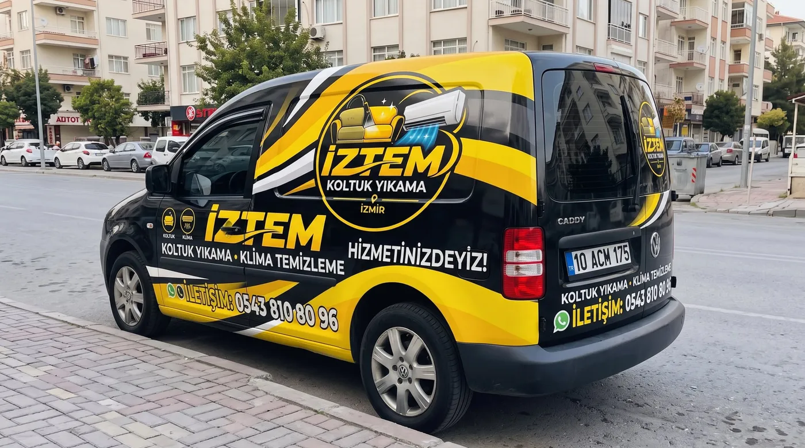

Ofis, İş Yeri, Taşınma ve Kiracı Sonrası Temizlik
Kısaca: İZTEM İzmir Çiğli ve çevresinde ofis ve iş yeri temizliği, taşınma temizliği, kiracı sonrası ev temizliği, iç ve dış pencere temizliği ile zemin temizliği hizmeti verir.

Ofis ve iş yeri temizliği: ofis, mağaza ve iş yerlerinde biriken toz ve kirleri temizliyoruz.
Taşınma ve kiracı sonrası ev temizliği: yeni eve taşınmadan önce veya evi teslim etmeden önce; mutfak, banyo, zemin ve uygun yüzeylerde temizlik yapıyoruz.
Pencere temizliği: ev, ofis, mağaza, fabrika ve iş yerlerinde iç ve dış cam yüzeylerdeki toz, su lekesi ve parmak izlerini uygun ekipmanlarla temizliyoruz.
Zemin temizliği: zemin malzemesine göre uygun ürün ve ekipman seçerek yüzeydeki toz ve kirleri temizliyoruz.
Nasıl çalışıyoruz?
- İhtiyacınızı ve metrekareyi yazın.
- Tahmini ücret.
- Randevu günü temizlik.
- Kontrol ve teslim.
Hizmet bölgeleri
Ev, Ofis ve Taşınma Temizliği hizmetimiz Çiğli, Menemen ve Karşıyaka ile Evka-2, Evka-5, Egekent, Villakent, Ulukent, 9 Eylül, Seyrek, Bostanlı ve Mavişehir mahallelerinde geçerlidir. Her gün 08:00–22:00, randevuyla.
Sık sorulan sorular
Taşınma temizliği ile kiracı sonrası temizlik aynı mı?
Kapsam benzerdir: kullanıma bağlı kirlerin temizlenmesi. Evin durumuna göre mutfak, banyo ve zeminlere öncelik veririz.
Pencere temizliği iş yerlerine de yapılıyor mu?
Evet; ev, ofis, mağaza ve fabrika cam yüzeyleri için hizmet veriyoruz.
İlgili hizmetler
Tente Temizliği
Tente yüzeyindeki toz, çevresel kir ve temizlenebilen lekeleri kumaşa uygun yöntemle temiz…
Klima Temizliği
Çiğli, Menemen ve Karşıyaka'da klima temizliği: filtre ve iç ünite temizliği, kötü koku gi…
Koltuk Yıkama
İzmir Çiğli, Menemen ve Karşıyaka'da evinizde yerinde koltuk yıkama. Profesyonel makine, k…
Randevu ve tahmini ücret için yazın veya arayın
Koltuk veya klima sayısını ve fotoğrafı gönderin, online tahmini ücreti iletelim.